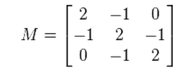

线性代数之各种各样的矩阵
Tags: matrix, linear algebra
矩阵家族成员非常多，本文主要记录了我遇到过的矩阵(前面的文章所提到的矩阵，在这里就不重复列举了)。以后见识了新的矩阵时，会继续扩充本文。
(以下知识均查阅了wikipedia。单词的中文翻译查的是有道词典。)
共轭(转置)矩阵 Conjugate Transpose Matrix
公式上的定义：
\[ A^{*} = (\overline {A})^{T} \]
A上面的横线表示对矩阵中的元素的复数部分取反(类似复数的上横线)。
回想下共轭复数的定义，可以发现，矩阵的共轭，还需要再转置一下，很很大的一个不同点。
共轭矩阵还有其他表达形式：
\[ A^{\dagger } = A^{*} = A^{H} \]
厄米特矩阵 Hermitian matrix
厄米特矩阵也称为self-adjoint matrix，中文是：自伴矩阵、自共轭矩阵、自伴随矩阵。
厄米特矩阵必须满足下面的性质:
\[ A = A^{*} \]
即，A等于A的共轭矩阵时，A是一个厄米特矩阵。
单式矩阵 Unitary matrix
看名字有点像单位矩阵(Unit matrix)，但是公式上的定义是这样子的：
\[ U^{*}U = I \]
即：如果矩阵的共轭乘以矩阵自身等于单位矩阵，那么它是一个单式矩阵。
正定矩阵 Positive Definite Matrix
定义比较复杂，我翻译下wikipedia的定义吧：
一个对称的n阶实数矩阵M，设元素不全为0的列向量为z，当所有这样的z满足\( z^{T}Mz > 0\)时，M是正定矩阵。
根据定义，可以知道单位矩阵I是正定的；
贴上wiki的例子来帮助理解：

设M的z为(a,b,c)，则有：

这个式子的结果显然是非负的，且当a=b=c=0时，这个式子才等于0，所以满足正定矩阵的条件。
半正定矩阵 Positive Semi-Definite
参考正定矩阵，半正定矩阵的定义公式是:\( z^{T}Mz >= 0\)。
负定矩阵 Negative Definite Matrix
参考正定矩阵，负定矩阵的定义公式是:\( z^{T}Mz < 0\)。
半负定矩阵 Negative Semi-Definite Matrix
参考正定矩阵，负定矩阵的定义公式是:\( z^{T}Mz <= 0\)。
厄米特矩阵的正定矩阵
参考正定矩阵，厄米特矩阵的正定矩阵的定义公式是:\( z^{*}Mz > 0\)，注意，算出来的值必须是实数，不能是复数。